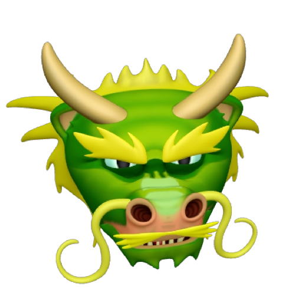
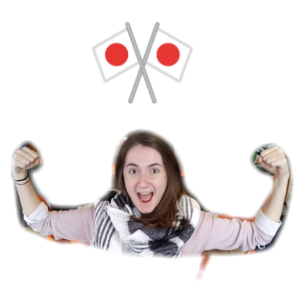
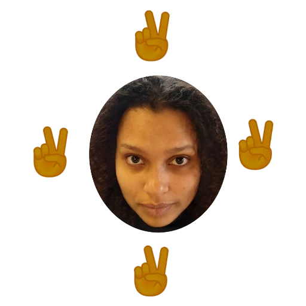
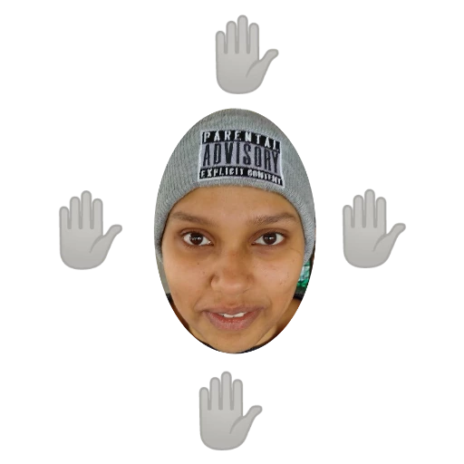
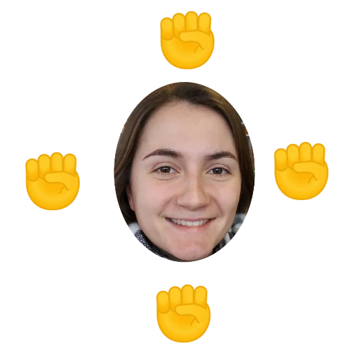

@()

@main("HTWG Ninja") {
  <div class="about">
  <h1>
    
    Welcome to Ninja
    
  </h1>

<div class="rules">
  <div class="rules-text">
  <p class="header-rules">The game is based on a classic hand game- Rock Paper Scissors
    where each player has an army armed with Rocks, Paper, and Scissors.
    <br>
    To win the game capture your opponent's flag. </p>
    
  <br>
  <h2>Rules</h2>
  <ul type="none" class="list-rules">
    <li>Scissors beats Paper  </li>
    <li>Paper beats Rock </li>
    <li>Rock beats Scissors </li>
  </ul>
    <ul type = "none" class="list-images">
      <li>  </li>
      <li> </li>
      <li> </li>
    </ul>
  </div>

</div>

    <div class="history">
  <h2>Creation of Rock Paper Scissors</h2>
  <p>  The earliest form of Rock Paper Scissors was created in Japan and is called Janken.
    This is a variation of the Chinese games introduced in the 17th century.
    Janken uses the Rock, Paper and Scissors signs. It is the game that the modern version of Rock Paper Scissors derives from directly.
    Hand-games using gestures to represent the three conflicting elements of rock,
    paper and scissors have been most common since the modern version of the game was created in the late 19th Century.
    This was between the Edo and Meiji periods.
    <br>
    By the early 20th century, Rock Paper Scissors had spread beyond Asia,
    especially through increased Japanese contact with the West.
    Its English language name is therefore taken from a translation of the names of the three Japanese hand-gestures
    for rock,paper and scissors; elsewhere in Asia the open-palm gesture represents “cloth” rather than “paper”.
    The shape of the scissors is also adopted from the Japanese style.

  </p>

    </div>
  <p> Ninja is a Opensource Project, if you find Bugs please report here:
    <a href="https://github.com/HelenNganga/Ninja">Github</a></p>


  <strong>&copy; 2020 Helen Nganga &amp; Julia Burri </strong>

  </div>
}
